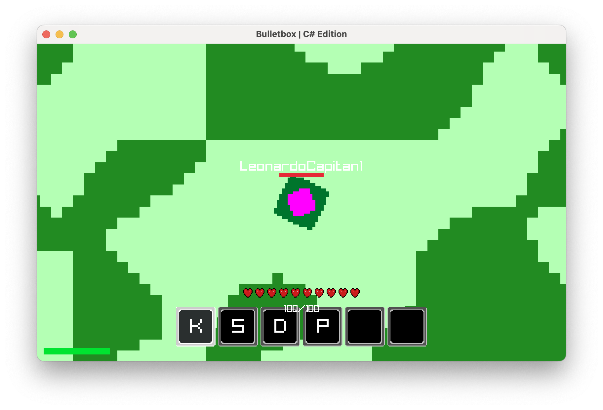

Biome System Prototype
< Back to Patch Notes
Bulletbox 26.1.1-01f
Alpha Unreleased
World & Biome Features
- Procedural Biome Architecture: Architected an entirely new biome system to structure world exploration. The map is now organized into modular square chunks that dynamically track unique biome properties.
- Surface Variations: Implemented the initial two surface environments: Meadow and Forest.
- Infinite Terrain Generation: Configured client-to-server data requests that trigger seamlessly as the player maneuvers through space, laying down the groundwork for endless world exploration.
- Natural Transitions: Leveraged Perlin noise formulas on the server side to generate contiguous environment shapes and smooth, organic borders between neighboring regions.
- Visual Mapping: Rendered distinct environment markers to represent chunk data visually: light green zones signal the sprawling Meadows, while deep green stretches define the thick Forests.
- Scalable Infrastructure: Designed the generator foundation with a modular structure, ensuring quick, hassle-free expansion of future terrain profiles and biome features.
Technical Infrastructure
- Deterministic Servers: Shifted generation mathematics to process deterministically straight from coordinates. The engine derives environments without caching every generated chunk permanently, shrinking back-end database bloat.
- Streamlined Sync Protocols: Established a lightweight client-server handshaking system exclusively optimized for high-speed chunk synchronization.
Development Notes
- This rollout functions purely as an early engineering proof-of-concept; asset textures, dense forests, complex visuals, blending filters, and alternative regions will be handled in subsequent sprints.
- Developers can modify the Perlin frequency parameters within
World.csto calibrate environmental contouring, stretch boundary geometry, and reshape local foliage clusters.
Development Preview
